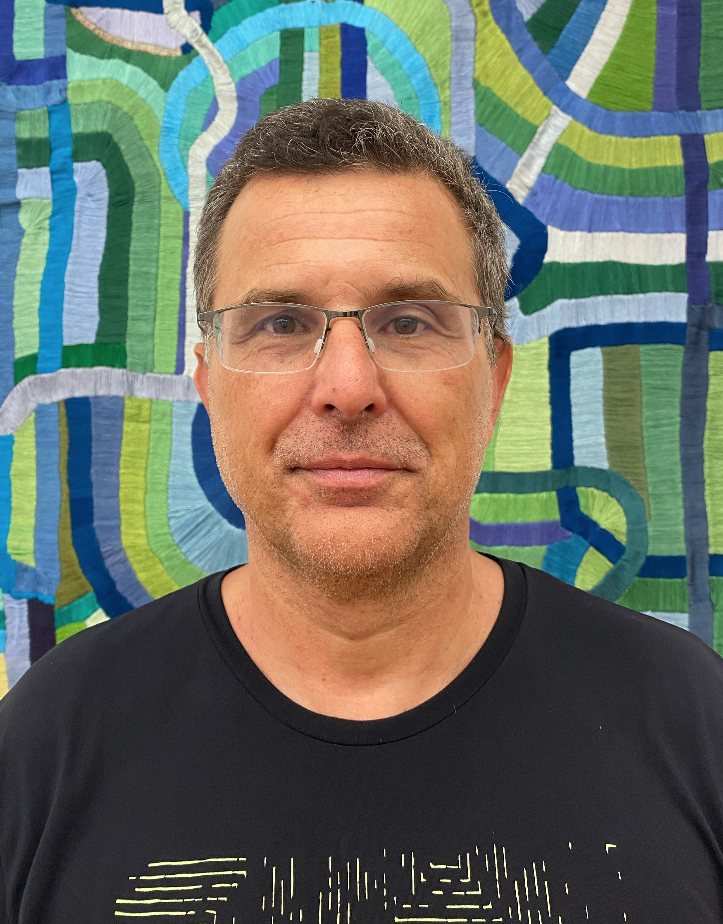

 |
Fernando Luís DottiPhD in Computer Science at Berlin Technical University, 1997.Full Professor at PUCRS - Pontífica Universidade Católica do Rio Grande do Sul School of Technology - Graduate Program in Computer Science - PPGCC Av. Ipiranga 6681 - 90619-900 - Porto Alegre - RS - Brazil E-mail: firstname.lastname(at)pucrs.br Phone: +55 51 3320 3558 (dept), +55 51 3353 8614 (direct) Dependable Distributed Computing | Curriculum Vitae (Lattes CV - CNPq) Short CV | DBLP | Google Scholar | ORCID | Research Gate |
Concurrency |
Operating Systems |
Distributed Systems
Distributed Algorithms |
Distributed Systems
Concurrency for Multi-Core Systems |
Verification of Concurrent Systems
I am interested in the theory and practice of distributed systems. Together with colleagues:
We are investigating scalable and dependable distributed systems, focussed on scaling the performance of the State Machine Replication approach. See publications below related to this research track.
Key-words: Distributed Systems, Replication, State Machine Replication (SMR), Parallel SMR, Partitioned SMR, Recovery, State-Transfer, Consensus Protocols, Multicast Protocols, Blockchains
In the past I have also investigated and proposed techniques and approaches to build correct distributed systems by construction.
Here an (1 pg.) abridged description of our approaches and results.
Estudantes de Graduação em Computação na PUCRS (Undergraduate Students): entre em contato para disciplinas integradoras, TCCs, etc. nesta área.
If you plan a MSc or PhD in Distributed Systems and would like to know more about how to do it at PUCRS, do not hesitate in contacting me. I am an advisor at the Graduate Program in Computer Science - PUCRS.
If you (academia or industry) would like to collaborate in topics such as: distributed systems, high-throughput dependable distributed systems, consensus, strong consistency software architectures, and other related - or if you think there could be common interests - please contact me.
If you are from the industry, our science and technology park TecnoPUC, several times awarded best in Brazil and Latin-America, can help us in several ways.
FlexCast: genuine overlay-based atomic multicast
E. Batista, P. Coelho, E. Alchieri, E. Alchieri, F. Dotti, F. Pedone
In: 24th ACM/IFIP International Middleware Conference (Middleware), December 2023
A Time-Phased Partitioned Checkpoint Approach to Reduce State Snapshot Overhead
Everaldo Gomes Junior, Eduardo Alchieri, Fernando Dotti, Odorico Mendizabal
In: LADC'23 12th Latin-American Symposium on Dependable Computing (LADC)
Parallel Execution of Transactions Based on Dynamic and Self-Verifiable Conflict Analysis
Jefferson Silva, Eduardo Alchieri, Fernando Dotti, Fernando Pedone
In: LADC'23 12th Latin-American Symposium on Dependable Computing (LADC)
Daisy Chain Cast - um protocolo para Multicast Atômico
Carlos Renan Schick Louzada, Fernando Dotti
SBRC-WTF2023 Workshop de Testes e Tolerância a Falhas
Benchmark TPC-C Aplicado em Replicação Máquina de Estados
Kayel L. Serafim, Eduardo Alchieri, Fernando Dotti
SBRC-WTF2023 Workshop de Testes e Tolerância a Falhas
Strengthening Atomic Multicast for Partitioned State Machine Replication
L. Pacheco, F. Dotti and F. Pedone
In: Latin American Symposium on Dependable Computing (LADC). 2022.
Early Scheduling on steroids: Boosting Parallel State Machine Replication
E. Batista, E. Alchieri, F. Dotti and F. Pedone
In: Elsevier Journal of Parallel and Distributed Computing. Volume 163, May 2022, Pages 269-282.
Exploiting Concurrency in Sharded Parallel State Machine Replication
A. Burgos, E. Alchieri, F. Dotti and F. Pedone
In: IEEE Transactions on Parallel and Distributed Systems, vol. 33, no. 9, pp. 2133-2147, 1 Sept. 2022, doi: 10.1109/TPDS.2021.3135761.
On the Performance of Using Parallel State Machine Replication to Implement Blockchains
A. Burgos, E. Alchieri and F. Dotti.
In: 2021 10th Latin-American Symposium on Dependable Computing (LADC), 2021, pp. 1-6, doi: 10.1109/LADC53747.2021.9672588
SmartTrie: Reducing Checkpoint's Impact in SMR Systems with a CTrie Data Structure
Erick Pintor and Fernando Dotti
In: XXXIX Simpósio Brasileiro de Redes de Computadores e Sistemas Distribuídos, 2021.
Replicação Máquina de Estados Paralelas com Escalonamento Híbrido
Aldenio Burgos, Eduardo Alchieri, Fernando Dotti and Fernando Pedone
In: XXXIX Simpósio Brasileiro de Redes de Computadores e Sistemas Distribuídos, 2021.
Shrinking Logs by Safely Discarding Commands
Luiz Gustavo Xavier, Fernando Dotti, Cristina Meinhardt and Odorico Mendizabal
In: XXXIX Simpósio Brasileiro de Redes de Computadores e Sistemas Distribuídos, 2021.
Parallel State Machine Replication from Generalized Consensus.
Tarcísio Ceolin Junior, Fernando Dotti and Fernando Pedone
In: 39th IEEE Symposium on Reliable Distributed Systems, 2020, Shangai - China.
Scalable and Decoupled Logging for State Machine Replication.
Luiz Gustavo Xavier, Fernando Dotti, Cristina Meinhardt and Odorico Mendizabal
In: XXXVIII Simpósio Brasileiro de Redes de Computadores e Sistemas Distribuídos, 2020, Rio de Janeiro.
Boosting concurrency in Parallel State Machine Replication
I. A. Escobar, E. Alchieri, F. Dotti and F. Pedone.
20th ACM/IFIP International Middleware Conference, December 2019, UC Davis, CA
Resource Utilization Analysis of Early Scheduling in Parallel State Machine Replication
Eliã Batista1, Eduardo Alchieri, Fernando Dotti and Fernando Pedone.
In: 9th Latin American Symposium on Dependable Computing (LADC), November 2019.
A Library for Services Transparent Replication
Paola Pereira, Cristina Meinhardt, Fernando Dotti and Odorico Mendizabal.
14th DADS Track of the 34th ACM Symposium on Applied Computing, April 2019
Early Scheduling in Parallel State Machine Replication
E. Alchieri, F. Dotti and F. Pedone
9th ACM Symposium on Cloud Computing 2018 (SoCC), October 2018
Boosting State Machine Replication with Concurrent Execution
E. Alchieri, F. Dotti, P. J. Marandi, O. M. Mendizabal and F. Pedone
8th Latin American Symposium on Dependable Computing (LADC), September 2018
Byzantine Fault-Tolerant Atomic Multicast
P. Coelho, T. Ceolin Jr., A. Bessani, F. Dotti and F. Pedone
48th IEEE/IFIP International Conference on Dependable Systems and Networks (DSN), June 2018
Reconfiguring Parallel State Machine Replication
E. Alchieri, F. Dotti, O. M. Mendizabal and F. Pedone
36th Symposium on Reliable Distributed Systems (SRDS), September 2017
High performance recovery for parallel state machine replication
O. Mendizabal, F. L. Dotti and F. Pedone
37th IEEE International Conference on Distributed Computing (ICDCS), June 2017
Efficient and Deterministic Scheduling for Parallel State Machine Replication
O. M. Mendizabal, R. T. S. Moura, F. L. Dotti and F. Pedone
31st IEEE International Parallel & Distributed Processing Symposium(IPDPS), May 2017
Analysis of Checkpointing Overhead in Parallel State Machine Replication
O. M. Mendizabal, F. L. Dotti and F. Pedone
31st ACM/SIGAPP Symposium on Applied Computing (ACM SAC/DADS), April 2016
Recovery in Parallel State-Machine Replication
O. Mendizabal, P. J. Marandi, F. L. Dotti and F. Pedone
18th International Conference on Principles of Distributed Systems (OPODIS 2014)
Model checking the deferred update replication protocol
Mendizabal and F. L. Dotti
Simpósio Brasileiro de Redes de Computadores, pp. 995-008, (SBRC 2013).
A formal model for the deferred update replication technique
Corradini, L. Ribeiro, F. L. Dotti, and O. M. Mendizabal
Trustworthy Global Computing - 8th International Symposium (TGC 2013 - Co-located with CONCUR 2013)
Revised Selected Papers, pp. 235-53, 2013.
A CTL Model Checker for Stochastic Automata Networks
Oleksinski, L. G. ; Correa, C. M. ; Dotti, F. L. ; Sales, A.
In: Quantitative Evaluation of Systems (QEST), 2013, Buenos Aires.
10th International Conference, QEST 2013. Heidelberg: Springer - NCS, 2013. v. 8054. p. 286-289.
Correct transformation: From object-based graph grammars to promela
L. Ribeiro, O. M. dos Santos, F. L. Dotti, and L. Foss
Science of Computer Programming, vol. 77, no. 3, pp. 214-46, 2012